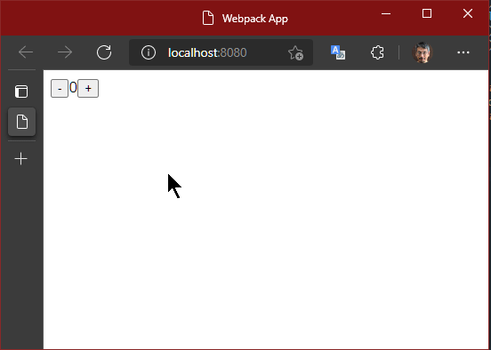
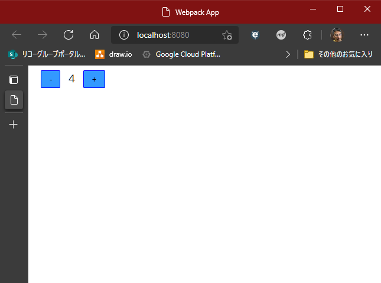

React の演習
前章でReactの特徴を説明しましたが、言葉では伝わりにくいので、実査に書いてみるのがいいですね。
ここでは、簡単にカウンターのアプリを作ってみます。

＋ボタンを押すと数字が足され、－ボタンを押すと減る、という単純なものです。
ここでのコンポーネントは、数値部分、ボタン部分、数値とボタンを組み合わせた部分 と3つに分けます。ボタン部分は、共通のコンポーネントとします。
細かすぎる感じがしますが、実際でもこのくらいまで細かくすることも多いと思います。
準備
create react app を使用する場合
Create React App というツールを使って、1コマンドで非常に簡単に React の開発環境を整えることができます。
- React のビルド環境
- TypeScript のビルド環境（テンプレートでそれを選択した場合）
- プレビュー用のローカル Webサーバー
ビルド環境を整えるのが面倒で、その為のツールや設定を行う必要があるのですが、それらを一括で行ってくれるのがこのツールです。
プロジェクト・ディレクトリの作成
ここでは、TypeScript で勧めていきたいので、そのテンプレートを使用します。下記コマンドを任意のディレクトリで実行します。
実行したディレクトリ以下に、指定したアプリ名のディレクトが作成され、その中にファイルが展開されます。
ここでは、my-app というアプリ名とします。
以下の出力がありあす。
ここまで出れば完了です。
アプリの実行
上のスクリプトを実行したときに出るログにあるように、アプリを開始したりビルドするなどのコマンドが、package.json の scripts に用意されています。
ローカル環境でアプリを起動するには、下記コマンドを実行します。
VSCode を起動するには、下記コマンドを実行します。
準備は以上です。数値を表示するコンポーネントの作成に進んでください。
手動で必要なパッケージをインストールする場合
手動で必要なパッケージをインストールし、環境を構築することもできます。
こちらの方法では、プロジェクトに応じて必要なものだけをインストールすることができます。 また、使用するパッケージの目的や関連性も把握できるため、より深い学習のためにはこちらの方法も良いでしょう。
空のディレクトリから始める場合は、前のセクションを参照して、npm init(yarn initでも可) と webpack initを作成してください。
webpack では、TypeScript と React を使うようにします。
webpack のウィザードの選択肢
React と関連するライブラリをインストールします。
TypeScriptのための型定義もインストールします。-Dを忘れないようにします。
TypeScript で後述する JSXを利用するので、tsconfig.jsonにそのオプションをつけておきます。また、
"moduleResolution" に "node" を、"files" も src/index.tsxとしておきます。
index.tsのファイル名も index.tsxに変えておきます。
webpack.config.jsの entry も変更しておきます。
以上で、準備はできました。
数値を表示するコンポーネントの作成
まず、数値の表示部分を作ります。ここでは、外から数値を受け取って、それをレンダリングすることだけを考えます。
ファイルは、src/DisplayNumber.tsxとします。拡張子が .tsxであることに注意してください。
はじめに Reactをインポートしています。これは、コンポーネント作成する上で必須になります。
type は、外部からどのような値を受け取るか、その値のオブジェクトの型を宣言しています。
その下がコンポーネントの定義になります。このように、関数で定義します。
export とつけるのは、このコンポーネントを使う側が import でこの関数を参照できるようにするためです。
関数の引数には、外部からの値=プロパティが入ります。React.FCの < > には、そのプロパティの型を定義しているわけです。
関数の戻り値となる returnには、HTMLのタグがまんま入っているように見えます。これは、JavaScript 内で、DOM（HTMLタグ）のようなものを書くことができる書式です。
これは、JSX と呼ばれる記法です。拡張子を .tsxとしたのは、TypeScript の JSX で書かれることを表しています。
React は、JSX 記法でなくても書けるのですが、こちらのほうが直感的だと思います。
JSX 内では、{ } に変数や関数を書くことができ、動的な値を出力するときに使います。
JSX で書かれたタグは、仮想DOM と呼ばれますが、HTMLと異なるところがあります。例えば属性に classがありますが、それはJavaScript の予約語となっているため、classNameとなります。
また、仮想DOM はオブジェクトでも有るため、下記のように変数に入れることが出来ます。不特定の数を出力するときなど、これを配列として使ったりします。
Note
ボタンのコンポーネントの作成
ボタンは、＋および－で共通で使われることとします。ただし、ボタン上の表示と処理が異なります。
処理は、数値に +1 するか、-1 にするか、ですが、その数値自体はこのボタンで管理するものではありません。このボタンを使う側で管理するものです。
したがって、ボタンを押したときに何をするのか＝関数、を使う側からもらうようにしましょう。
プロパティとしては、ボタン上の文字（キャプション）とボタンを押したときの処理が書いてある関数とします。
src/IncrementalButton.tsx ファイルを作成します。
HTMLの属性にも { } で動的に値を渡すことが出来ます。
このように、コンポーネントの引数に関数を入れることができるため、外から振る舞いを変える（依存性の注入: DI とも言います）ことが簡単にできます。
数値表示とボタンを組み合わせたコンポーネントの作成
これまで作ったコンポーネントを組み合わせたコンポーネントを作ってみましょう。
src/Counter.tsxファイルを作成します。
また、カウントする数値はこのコンポーネント内でその値（状態）を管理します。よって、外部から値を受け取る必要はありません。
import で作ったコンポーネントを参照します。
コンポーネントは、JSXのタグとして使用できます。このとき、プロパティを属性として渡します。
管理する数値を、useStateで宣言します。引数は初期値です。
useStateの戻り値はタプル型の配列で、1番目に状態の値（state, ここでは数値）、2番目に状態の値を変更するための関数となります。
状態（state, 値）を変える場合、値の変数を直接変更するのではなく、必ずこの関数を使う必要があります。
useCallbackで、state の値に +1, -1 する処理を宣言しています。
この useCallback, useState については、この下の「React のパフォーマンスと Hooks」で説明します。
HTMLへの挿入
コンポーネントは作りましたが、それをHTMLのどこに当てはめるのか、ということが必要です。
また、それを行うファイルこそがアプリの起点（はじめに読み込まれるファイル）となります。
まず、index.htmlに、React のコンポーネントが描画される場所を作りましょう。
id が "app" の div 要素に React をレンダリングするようにしましょう。
index.tsxを作成します。
ここでも、コンポーネントを import して、render に渡すだけです。
描画先となる、HTMLの DOM を 通常のWebアプリでよく見る document.getElementByIdを使って取得しています。
これで完成です。ターミナルから yarn serveを実行してみましょう！
このように動作したでしょうか。

CSS in JS でスタイルを定義してみる
ボタンも小さくて、それぞれの隙間がなくて操作しづらいので、スタイルで調整してみましょう。
以前のセクションで CSS in JS のライブラリとして紹介した、"Emotion" を使ってみましょう。
何はさておき、インストールです。
TypeScript を使っている場合は、その設定が必要です。tsconfig.json に、下記を追加します。
Note
ボタンにスタイルを割り当ててみましょう。IncrementButton.tsxを開きます。
1行目のコメントは、emotion を使うにあたって必要なもので、これがあることで、仮想DOMに本来無い cssの属性が適用できます。また、React のインポートも必要なくなります。
emotion から参照した、cssという関数でスタイルを定義します。
この関数に タグ付きテンプレート として、文字列で CSS を渡します。
ここでは、style というオブジェクトを定義して、その中でスタイルを定義していますが、直接変数に与えても構いません。ただ、コンポーネントの中で複数のスタイルを扱う場合、このようにオブジェクトにまとめておいたほうが、管理しやすいと思います。
スタイルを 仮想DOMに割り当てるには、タグの属性 cssに定義した値を与えるだけです。
保存して実行してみましょう。スタイルが適用されました。

通常の HTMLとCSS を使ったスタイル定義では、それぞれ別のファイルに分かれて書きます。
そうすると、CSS の中で定義しているクラスなどが、どこで使われて、変更がどこに影響があるのかを管理するのが難しくなります。
React のコンポーネント内にパッキングすることで、部品とスタイルが同じところで管理されるため、関係性が非常にわかりやすくなります。
React のパフォーマンスと Hooks
React では、コンポーネントの書き方によっては再レンダリングが頻繁に行われ、パフォーマンスが低下します。
React.memoを使うと、コンポーネントの再レンダリングを抑制できます。
Reactは、再レンダリングの条件として、下記があります。
- 状態（state）の変更
- 親 (または子/children) の再レンダリング
- Context の変更
- React hooks の変更
親のStateが変化すると、子のコンポーネントでプロパティの変化がなくても再レンダリングされます。React.memoを使うと、コンポーネントごとでプロパティの変化の評価が行われ、変化がなければ再レンダリングを行いません。
ただ、React.memoを使っていたとしても、そのコンポーネントへ渡すプロパティの値が、<Component use={{...user}} /> としていたり、 <Component onClick={() => (...)} /> などとしていると、内容は同じでも毎回新しいオブジェクトや関数が生成され、値としては変化したことになってしまい、再レンダリングが起こってしまいます。
そこで、useMemoやuseCallbackを使って、同じオブジェクトや関数を使い回すようにします。
オブジェクトや関数の変化を理解するには、オブジェクトの同一性のことも理解しておきましょう。
また、React.memoは値の比較にもある程度コストがかかるため、必要なときにだけ使うようにしましょう。今回の規模ではパフォーマンスに影響のあるものではないですが、参考までにコードを載せておきます。
参考:
- React.memo / useCallback / useMemo の使い方、使い所を理解してパフォーマンス最適化をする #JavaScript - Qiita
- React再レンダリングガイド: 一度に全て理解する #React - Qiita
上のコードは、
useCallbackを使わずに、下記のように書いても動作します。